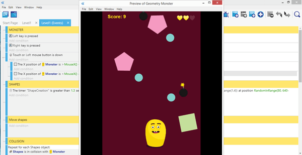
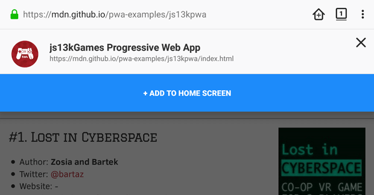
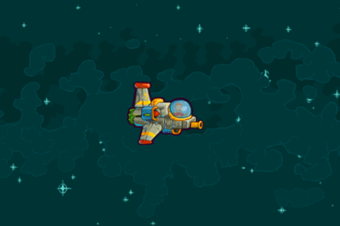
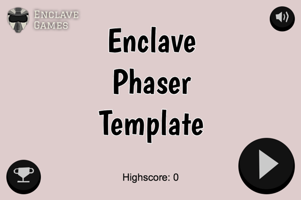
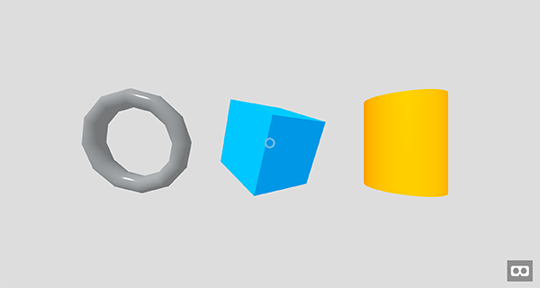
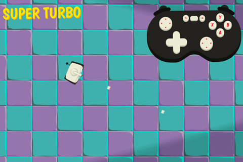
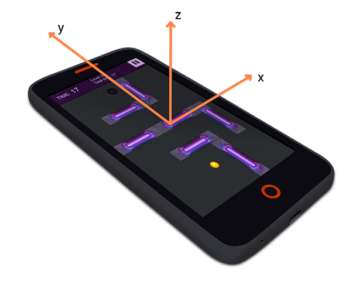
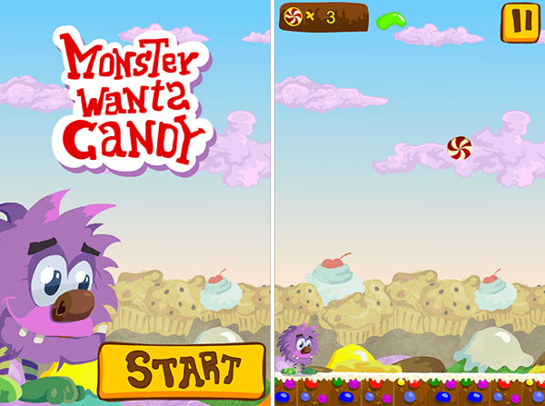

Open Enclave Games
All the open source projects created by Andrzej Mazur from Enclave Games are listed here, on the open.enclavegames.com website. Feel free to check them out, learn from them and send pull requests if you have any feedback.
If you like what I'm doing and gonna use any of the available source code in your project, or just appreciate open gamedev, you can say "thank you" by buying me a beer. Cheers!
Geometry Monster with GDevelop

Tutorial on how you can build an example game, Geometry Monster, using GDevelop game engine. The source code of this casual mobile game is available for download.
js13kPWA

Progressive Web App introducing PWA concept, showcasing App Shell structure, working offline with Service Workers, installing with Web Manifests and Add to Home screen feature, and re-engaging with Notifications and Push. It uses the A-Frame category entries from the js13kGames 2017 competition as content.
JavaScript Game Controls

Pure JavaScript demo of game control mechanisms implemented for the MDN Games articles - including mobile touch, desktop keyboard and mouse, gamepad, TV remote, Leap Motion and others.
Enclave Phaser Template

Fully mobile responsive, portrait and landscape compatible template for HTML5 games written using the Phaser game engine, with helper functions, organized in states.
Intro to 3D Games

MDN Games introductory tutorials with articles and demos on how to start building 3D games using Three.js, PlayCanvas, BabylonJS, but also A-Frame, shaders.
Gamepad API Content Kit

Gamepad API Content Kit is where you can find all the resources about the Gamepad API, and a game demo utilizing this API.
Gamedev Phaser Content Kit

This Content Kit contains resources on how to start building games with Phaser.
Gamedev Canvas workshop

This workshop contains resources on how to start building games in pure JavaScript and render them on Canvas.
Cyber Orb

Simple HTML5 mobile demo game built with Phaser that uses the Device Orientation and Vibration APIs.
Monster Wants Candy

Simple HTML5 game created with Phaser utilizing states and built step by step.
Other projects
Other related projects like the demo for the Three.js article, resources for HTML5 game developers, a JavaScript clock, an eBook or even an old game.